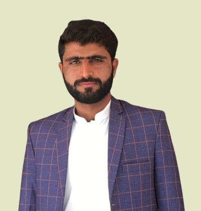

Ghulam Rasool
CS Student
About Me
"Passionate Computer Science student with a strong foundation in programming, algorithms, and software development. Eager to apply technical skills and problem-solving abilities to real-world challenges in the tech industry."
Education
- University of Sargodha - Bachelor in Computer Science (2021 - 2025) - CGPA 7th-Semester
- Govt. HIGHER SECONDARY SCHOOL GARHI KHAIRO, Jacobabad - Pre-Medical (2019 - 2021) - Annual Result: FCS 969/1100
- UNIVERSAL PUBLIC SCHOOL MANJHOO SHORI NASIRABAD - Science (2018) - Annual Result: Matric 803/1100
Skills
- Good Communication
- Problem Solving
- Web Development
- Machine Learning & AI
- Time Management
- Team Collaboration
Languages
- Urdu
- English
- Siraiki
- Sindhi
- Balochi
Interests
- Book Reading
- Visiting Historical Places
- Cricket
Experience
- Personal Project - UI/UX Automation Using LLM (5 Months)
- Built a tool to automate UI/UX design using Large Language Models (LLMs) like GPT-4.
- Reduced design iteration time by 40% by automating repetitive tasks.
- Trained the LLM on design principles to produce user-friendly layouts and color schemes.
- Tested the tool with users, achieving a 90% satisfaction rate.
- Tech Used
- Protege
- Sparql
- Graph RAG
- Figma